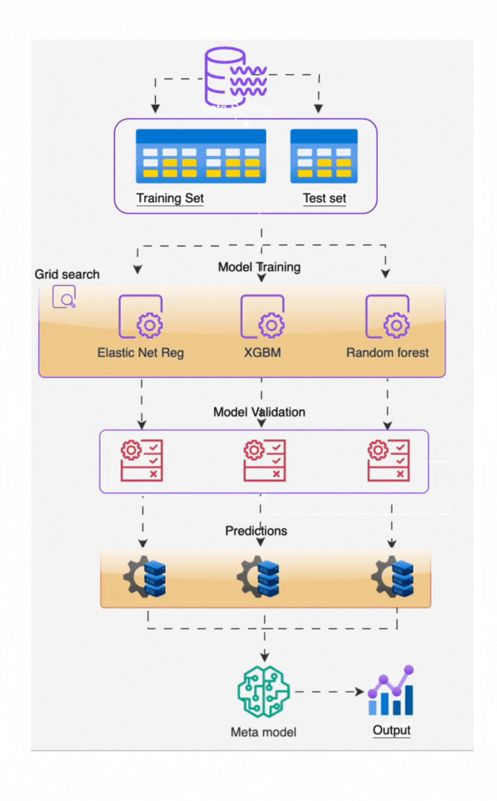

Machine Learning Meets the Labour Market
🤖 Solving an Economic Blind Spot with Data Science
Timely, accurate data is the lifeblood of good economic policy. But in Australia—as in many countries—key labour market data often arrives too late, too aggregated, and too slowly to guide real-time decision-making.
This poses a major problem: how can governments, job seekers, and educators make informed choices if they don’t know where jobs are actually growing or shrinking right now?
🔍 The Economic Problem: Labour Market Blindness
Australia’s official employment statistics (from the ABS) are high quality but come with two critical limitations:
- Time Lag: Some data is months or even years old.
- Lack of Detail: National or state-level figures can’t reveal local or occupation-specific shifts.
These limitations leave policymakers flying partially blind—especially during periods of rapid change, like the COVID-19 recovery.
🤖 The ML Solution: NERO — Nowcasting Employment in Real Time
To fill this data gap, researchers developed NERO (Nowcast of Employment by Region and Occupation), a machine learning-based tool that predicts current employment trends monthly for 355 occupations across 88 Australian regions.

📈 Real-World Impact
By delivering timely, granular, and regionally precise labour market intelligence, machine learning enables:
🎯 Targeted Policy Interventions Support can be directed to occupations or regions facing real-time shortages or unemployment.
📚 Responsive Training Systems Education providers can align TAFE and university programs with real-time demand signals from industry.
🔎 Empowered Jobseekers Individuals can make more informed career decisions based on which occupations are actually hiring in their local area.
🧠 A Paradigm Shift in Economic Analytics
This is more than a technical upgrade—it’s a fundamental shift in how we understand and respond to the economy. Machine learning enables governments to move from reactive to proactive, detecting turning points and skills mismatches before they show up in official statistics.
As data richness grows and models improve, ML-powered nowcasting could become the new standard for economic intelligence—not just for employment, but for inflation, housing, productivity, and more.
Bottom line: Machine learning isn’t just about automation or tech—it’s solving real economic problems, one algorithm at a time.